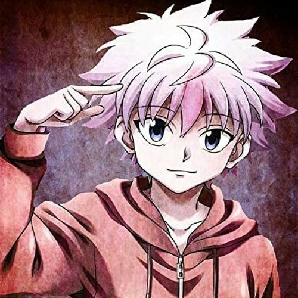
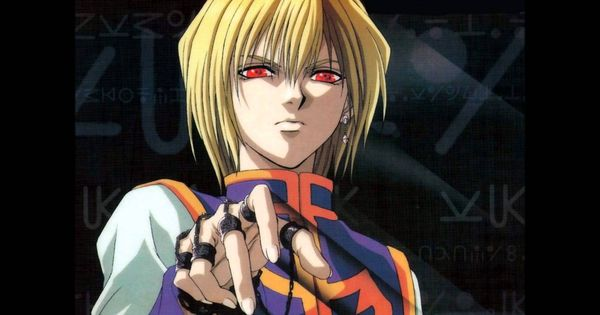
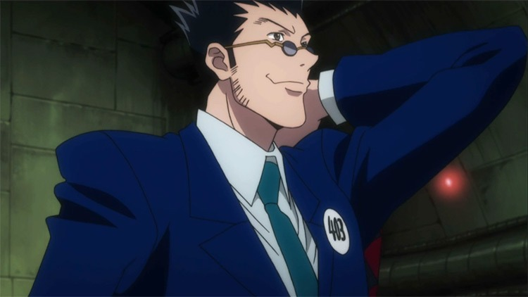

is a Rookie Hunter and the son of Ging Freecss. Finding his father is Gon's motivation in becoming a Hunter.[4]
is initially introduced as a cheeky, cheerful and mischievous kid who befriends Gon during the Hunter Exam.
is the sole survivor of the Kurta Clan (クルタ族, Kuruta-zoku),
is a teen that looks like a young adult who befriends Gon, Kurapika and Killua during the Hunter Exam.
He has been the main protagonist for most of the series,
having said role in the Hunter Exam,Zoldyck Family, Heavens Arena, Greed Island, and Chimera Ant arcs.
He was also the deuteragonist of the Yorknew City arc.

Killua Zoldyck
His ruthlessness and aptitude in killing show the other side of him — deadly, violent, and bloodthirsty

Kurapika
a race with treasured irises that turn scarlet in times of anger or emotional turmoil.

Leorio Paradinight
After losing a friend to a curable illness he could not afford the treatment for, Leorio decides to become a Hunter,
seeking the large financial gains of the profession to become a doctor and treat the impoverished for free.